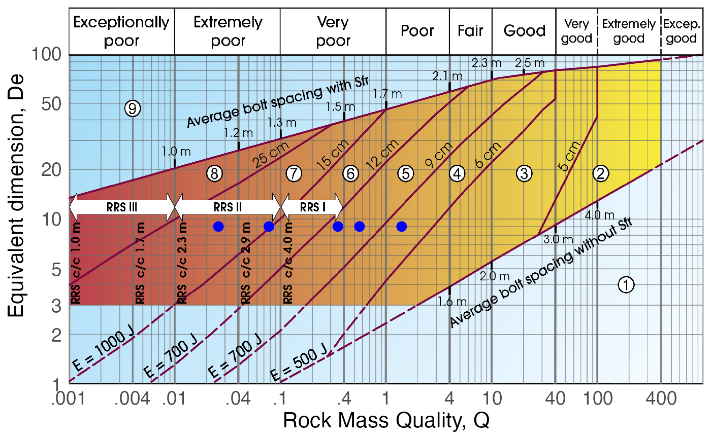

Draws data points on top of the Q calssification system of 1993.
References
Grimstad, E. & Barton, N. (1993). Updating the Q-System for NMT. Proc. int. symp. on sprayed concrete - modern use of wet mixed sprayed concrete for underground supports, 46-66. Oslo, Norway.
Examples
De = 9
Q = c(.026, 1.4, .078, .56, .35)
Q_93(Q, De)
